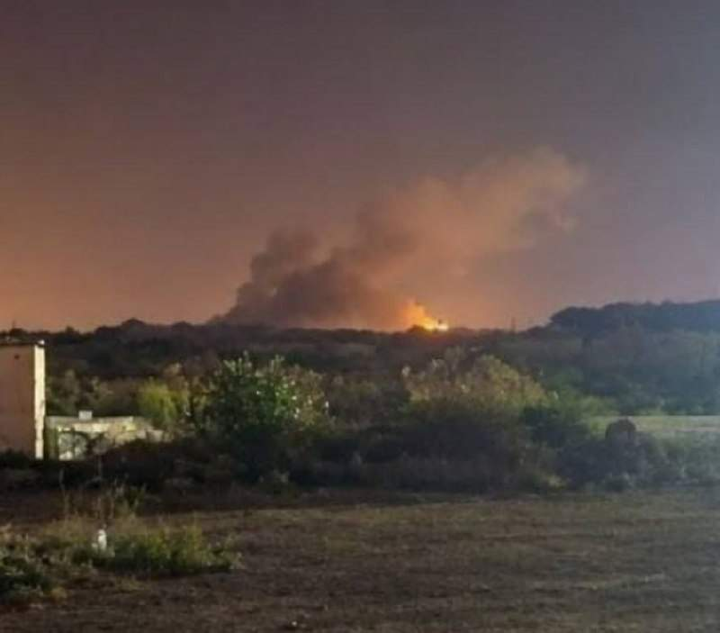
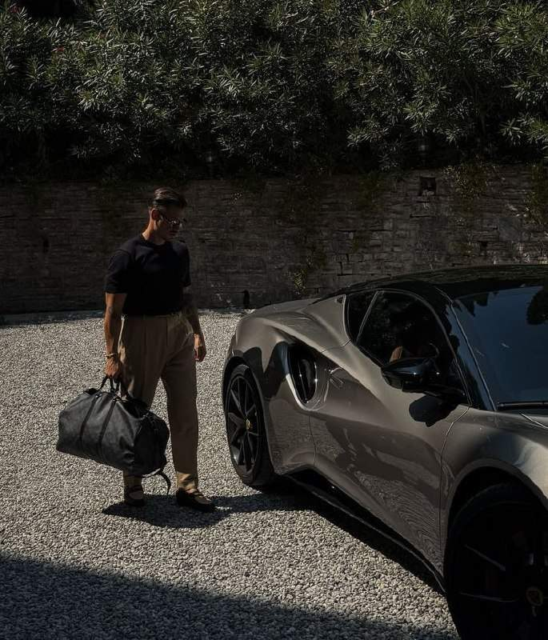

"Украина в итоге будет немного другой": Трамп заявил, что стороны очень близки к заключению сделки по урегулированию конфликта на Украине. По его словам, переговоры завершатся успешно, а Украина по их итогам изменится.
"Украина в итоге будет немного другой": Трамп заявил, что стороны очень близки к заключению сделки по урегулированию конфликта на Украине. По его словам, переговоры завершатся успешно, а Украина по их итогам изменится.
Фридрих Мерц заявил о готовности встретиться с Владимиром Путиным на саммите G20. Мерц отметил, что не станет уклоняться от возможного контакта с президентом России на саммите в Майами. "В политике приходится разговаривать и с теми людьми, у которых совершенно иное мнение, чем у вас". Чудак с нулевым рейтингом на распальцовках.

США продолжают наносить незначительные удары по объектам Ирана. Второй день подряд США нанесли ограниченные авиаудары по острову Кешм в Ормузском проливе. Четыре авиаудара были по позициям иранской системы ПВО в городе Кешм, а также, возможно, по порту Бахман. После взрывов были замечены очаги возгорания.
Win-Win pinned a video
22-летний немец забрался на 30-метровый флагшток перед зданием Рейхстага, сорвал флаг Германии и заменил его палестинским. В это время ещё двое из пропалестинской группы Peacefully Against Genocide транслировали происходящее в соцсети.
24-летний поляк, открывший огонь в Кракове в субботу, в результате чего погибли шесть человек, скончался в больнице после того, как был ранен полицией. Власти предполагают, что он мог быть вдохновлен идеологией крайне правых, ссылаясь на символы, найденные на его одежде. Следствие продолжает изучать возможные мотивы преступления.
Младший брат Виктора Орбана предприниматель Арон Орбан, предположительно, задержан по подозрению в пособничестве нелегальным мигрантам, заявил премьер страны Мадьяр. В компании Арона Орбана, занимавшейся оказанием помощи в получении въездных виз гражданами Вьетнама, произведены обыски и выемка документов в рамках заведенного уголовного дела. Расправляются потихоньку.

Стильная одежда для мужика — это как большой чл *н Вы просто не представляете, как меняет жизнь мужчины стильная брендовая одежда: дикий интерес девушек, продвижение по карьерной лестнице и даже повышается самооценка. И не обязательно тратить кучу денег на дорогущие люксовые шмотки, просто зайдите в Made in Italy Men . Это крупнейший онлайн-магазин брендовой мужской одежды и украшений Premium-класса с высочайшим качеством, только цены в десятки раз ниже , чем в тех же бутиках. — Множество товаров в наличии в Москве. — Доступна доставка с оплатой после примерки. — Для регионов доступен СДЕК наложенный платеж. ⚡️ Поверьте, изменить свой образ можно за копейки вместе с Made in Italy Men
Разбор интервью Илона Маска, где он говорит о начале глобальных перемен в ближайшие несколько лет, снимая три ограничения развития цивилизации (энергию, чипы и физический труд). Горизонт событий - Telegram Разбор интервью Илона Маска инвестору Рону Барону: «Мы строим цивилизацию вычислений — или останемся без чипов» Часть 1⃣ 🏭 Terafab: завод, который должен стать экономикой ➡️ Маск строит огромный завод в Техасе, на месте бывшей угольной электростанции, площадью…
Российская делегация вылетела в Абу-Даби, где запланированы трехсторонние переговоры между Россией, США и Украиной.
Военный Ту-154, обычно используемый для перевозки высокопоставленных чиновников и военнослужащих, приземлился в воскресенье вечером в израильском аэропорту имени Бен-Гуриона после вылета с военной базы недалеко от Москвы, сообщает израильский телеканал Kan News. Цель полета остается неясной, ни израильские военные, ни российское посольство не прокомментировали этот визит.
Россия не согласится на замораживание конфликта, которое позволит сохранить существующую угрозу безопасности, заявил постпред при ООН Небензя.
Германский канцлер Фридрих Мерц пригрозил заблокировать бюджет ЕС на 2028–2034 годы, если все страны-члены не согласятся оказывать финансовую помощь Украине в 2027 году и в последующие годы. В следующем году Киеву потребуется 70 миллиардов евро, при этом ЕС пообещал выделить около 45 миллиардов. Венгрия, Словакия, Болгария и Чехия выразили несогласие с дальнейшими взносами. Так и развалится ЕС.
Спецпосланники президента США Уиткофф и Кушнер могут совершить визит в Россию для встречи с Владимиром Путиным после переговоров в Абу-Даби.
Оказывается, Зеленский предупредил своих западных партнеров о том, что Россия намерена перебить все мосты через Днепр. Ранее он обещал сорок дней победного наступления. Тем же партнерам. Обещания резко сменили ориентацию. С востока на запад. Как могут западные партнеры помешать перебить все мосты через Днепр, не очень понятно. Мерц пообещал переговорить с Путиным. Переговорить с Искандерами не обещал. А надо бы говорить именно с Искандерами. Ведь они полетят.